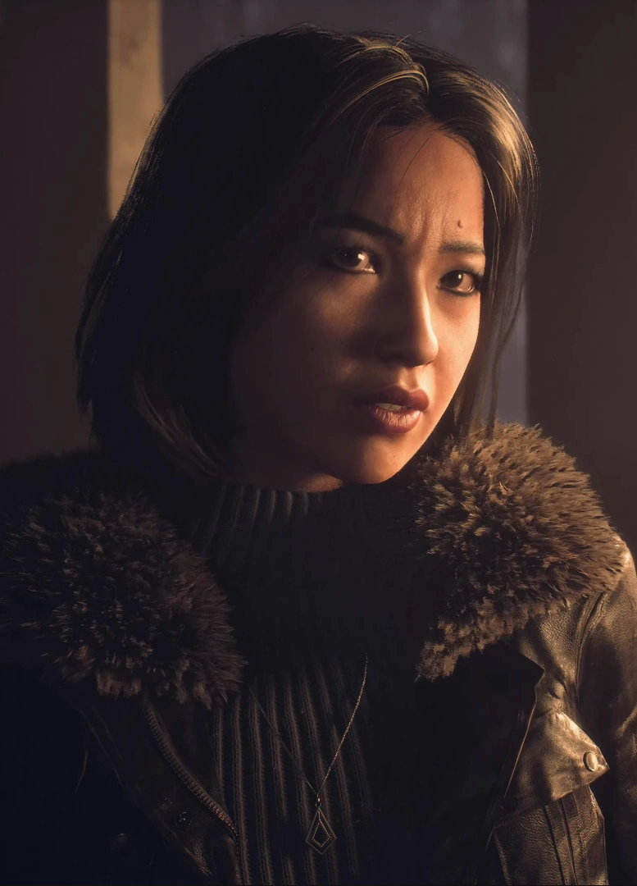

Emily makes terrible decisions during the prologue, being the one who initiates the prank on Hannah, where she gained her iconic catchphrase "Its just a prank Han!". This was due to Hannah having a crush on Mike (her boyfriend), but is low key still kind of irredeemable.
Emily starts off the game in an interesting position. We find out that Mike (her previous boyfriend) and her have broken up, and shes now dating Matt, another member of the group. Her and Matt spend some time together until she walks off to go "grab another bag", instead going to make up with Mike. Once everyone gets to the lodge, her and Jess get into a giant argument which seperates the group. She is the ultimate catalyst for disaster...
After the fight, Emily and Matt walk back to the cable car station to go look for a bag she lost. This is where they find the cable car station has been defaced and remember that the required key is with Josh. After returning to the lodge they find a scared Ashley and Chris who think they just murdered Josh due to the psychos elaborate pranks. Emily and Matt go back to the cable car once again to see if theres a way out. Once they get back to the car they see the fire tower and decide to radio for help. Once up to the fire tower, it starts falling down as it goes up in flames. This is the point of the game where the operator says they have to wait "Until Dawn" .
Emily wakes up dangling from a wire of the buring tower upside down. Once she swings over to a nearby ledge, she begins to explore, coming in contact with the stranger who gives her flares. Emily then gets into the best chase scene in the whole game with Handigo before escaping off a broken zipline into the woods. (Please watch this chase scene if you havent already its literally beautiful and shes so amazing.) After this, Emily regroups with the group where she has another iconic line (if she gets bit by Handigo), "Understand the palm of my hand." She then follows Sam until the end of the game.
Im not even going to hide my favoritism for this character, Emily is the best character of Unil Dawn. Did she start the whole ordeal? Yes. Was she a total piece of work? Sure. But you cannot deny this woman's power. She has the best lines of the game, goes through the most trauma (barring Jess), and has the best scenes of the game.
Emily's Score: 10/10
